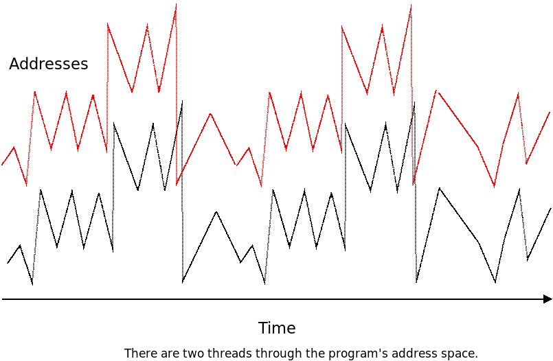
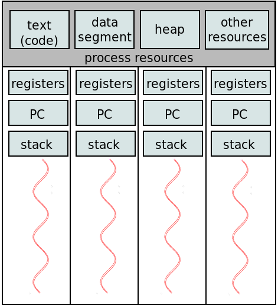
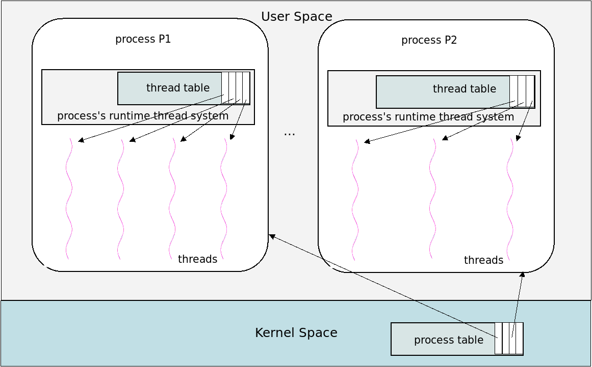
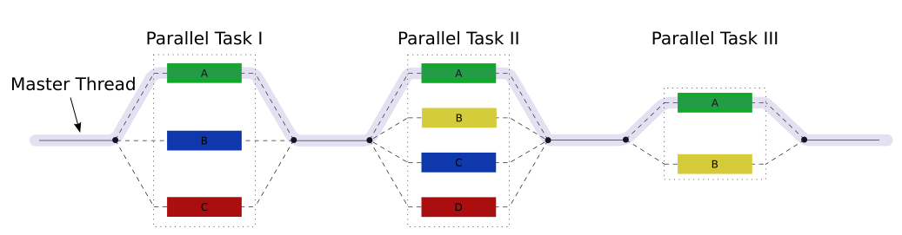

class: center, middle, title-slide ## CSCI 340 Operating Systems <br> ## Chapter 4: Threads .author[ Stewart Weiss<br> ] .license[ Copyright 2020 Stewart Weiss. Unless noted otherwise all content is released under a [Creative Commons Attribution-ShareAlike 4.0 International License](https://creativecommons.org/licenses/by-sa/4.0/). Background image: roof of the EPIC Museum, Dublin, by Stewart Weiss. ] --- name: cc-notice template: default layout: true .bottom-left[© Stewart Weiss. CC-BY-SA.] --- name: tinted-slide template: cc-notice layout: true class: tinted --- name:toc ### Table of Contents [Prologue: Processes Revisited](#prologue-1)<br> [Prologue: Threads](#prologue-2)<br> [About This Chapter](#about-chapter)<br> [Chapter Objectives](#objectives)<br> [Motivation](#more-motivation)<br> [What is a Thread?](#thread-posix-def)<br> [Thread Resources](#thread-resources)<br> [Single- and Multi-Threaded Processes](#thread-visualization)<br> [Visualizing Threads](#thread-symbol)<br> [Reasons for Multi-threading](#thread-uses)<br> [Concurrency Versus Parallelism](#concurrency)<br> [Visualizing Concurrency and Parallelism](#concurrency-visualized)<br> [Challenges in Parallel Programming](#parallel-challenges)<br> [Sources of Parallelism in Problems](#parallelism-models)<br> [Visual Comparison](#parallelism-visualized)<br> [Speed-Up](#speedup)<br> [Limitations of Parallelization](#speed-up-limits)<br> [Amdahl's Law](#amdahls-law)<br> [Applications of Amdahl's Law](#amdahl-examples)<br> [Maximum Possible Speedup](#amdahl-limit)<br> [Plot of Amdahl's Law](#amdahl-plot)<br> --- ### Table of Contents [Multi-threading Models](#multithreading-models)<br> [Thread Implementations](#thread-types)<br> [User Level Threads](#user-threads-1)<br> [A POSIX Threads Example](#pthreads-example-1)<br> [Some Explanation](#pthreads-2)<br> [Fork-Join Flow](#fork-join-2)<br> [User Level Threads: Pros](#user-threads-pros)<br> [User Level Threads: Cons](#user-threads-cons)<br> [Kernel Level Threads](#kernel-level-threads-1)<br> [Kernel Level Threads: The Confusion](#kernel-level-threads-2)<br> [Kernel Level Threads: A Visualization](#kernel-level-threads-3)<br> [About Kernel Level Threads in Linux](#linux-kernel-level-threads)<br> [Linux Kernel Level Thread Example](#kthread-example-2)<br> [Linux Kernel Level Thread Example](#kthread-example-info)<br> [Kernel Level Threads: Pros and Cons](#kernel-threads-2)<br> [Implementation of User Level Threads](#user-thread-models)<br> [Many-to-One (M:1) Threading Model](#many-to-one)<br> [Many-to-One (M:1) Threading Model Pros and Cons](#many-to-one-2)<br> [One-to-One (1:1) Threading Model](#one-to-one)<br> [One-to-One (1:1) Threading Model Pros and Cons](#one-to-one-2)<br> [Many-to-Many (M:N) Threading Model](#many-to-many)<br> [Many-to-Many (M:N) Threading Model Pros and Cons](#many-to-many-2)<br> [Two-Level Threading Model](#two-level)<br> --- ### Table of Contents [Scheduler Activations](#scheduler-activations)<br> [Scheduler Activation Use](#scheduler-activations-2)<br> [Implicit Threading](#implicit-threading-intro)<br> [Parallelizing Compilers](#parallelizing-compilers)<br> [Types of Implicit Threading](#implicit-thread-types)<br> [Underlying Technology](#technologies)<br> [Thread Pools](#thread-pools)<br> [The Fork-Join Model](#fork-join-1)<br> [Fork-Join Parallelism](#fork-join-2)<br> [OpenMP Overview](#openmp-intro)<br> [OpenMP Key Features](#openmp-features-1)<br> [OpenMP Run-time Routines](#openmp-features-2)<br> [OpenMP Example Program](#openmp-example)<br> [Grand Central Dispatch](#grand-central-dispatch)<br> [Example of a GCD Program](#gcd-example)<br> [Issues with .fixedblue[fork()]](#fork-issues)<br> [Issues with the .fixedblue[exec()] Family](#exec-issues)<br> [Signals](#signals)<br> [Signal Handling](#signal-handling)<br> [Signals and Threads: Issues](#signal-handling-questions)<br> [Signals and Threads: Solutions](#signal-handling-threads)<br> [Thread Cancellation](#thread-cancellation)<br> [Thread Cancelability](#thread-cancellation-issues)<br> --- ### Table of Contents [Thread Cancelability Control](#thread-cancelability)<br> [Thread Cancellation Points](#thread-cancellation-points)<br> [References](#references)<br> <!--TOC_END--> --- name: prologue-1 ### Prologue: Processes Revisited In the preceding chapter, you learned about .greenbold[processes]. A process was defined as a program in execution, and it was assumed that a process had a single .greenbold[thread of control]. What does this mean? -- - A ".bluebold[thread of control]" is a .redbold[sequence] of instructions that is executed .redbold[one instruction at a time], .redbold[one after the other], during the execution of a program.super[1]. .left-column[ Imagine that when a program executes, each time a machine code instruction is executed, the time of execution and address of the machine code instruction are written to a line of output. A single thread of control through a program would generate a graph such as the one to the right. ] .right-column[ <img src="figures/thread-path.png" width=100% alt="thread"> ] -- .below-column[ .redbold[Food for thought]: Why does this graph have repeating patterns, and why does it make big jumps? ] --- name: prologue-2 ### Prologue: Threads Modern operating systems have made it possible for a process to have .greenbold[multiple threads of control]. These multiple threads of control are called .greenbold[threads]. -- .left-column[ Multiple threads of a process can run .redbold[in parallel] and can therefore speed up a computation, taking advantage of the multiple processors that exist in almost all modern computers. To the right is a graph of two threads of a multithreaded program. ] .right-column[  ] -- .below-column[ Some programs can have hundreds or even thousands of threads. .redbold[Modern operating system kernels are always multithreaded.] ] --- name: about-chapter ### About This Chapter Because threads are so ubiquitous and also so hard to understand, they are an important topic in an operating systems course, and this chapter is entirely devoted to their study. In particular, it will cover the following topics: - Multicore programming - Explicit Threading - Thread libraries - Implicit threading - Threading issues --- name: objectives ### Chapter Objectives You should be able to - identify the basic components of a thread, and compare and contrast threads and processes; -- - describe the advantages and disadvantages of designing multithreaded programs as compared to single-threaded programs; -- - explain and apply .greenbold[Amdahl's Law]; -- - describe various multithreading models, explain how they differ, and identify the strengths and weaknesses of each model; -- - explain what a thread library is and name three different thread libraries; -- - read, understand, and modify simple programs that use the .greenbold[Pthreads] library; -- - explain what implicit threading is and describe .greenbold[thread pools], the .greenbold[fork-join model], and .greenbold[OpenMP]; -- - describe how the Linux operating system represents threads; and -- - read and understand simple multithreaded programs that use the Linux threading API. --- name: more-motivation ### Motivation .redbold[Why are threads an important topic?] -- - Modern kernels are multithreaded. Understanding them requires understanding threads. -- - Most modern applications are multithreaded. Examples: - A web browser process might have one thread to render images and text and another to download data. - A web browser might run each plug-in in a separate thread. - A chess program might have one thread "listening" for user input and rendering the chess board, and another analyzing future moves, while the user is thinking. -- - Creating processes is much more time-consuming than creating threads. - Processes use many more resources than threads overall. -- - Because threads share many of the same resources, cooperation among the threads that share resources .redbold[can] be easier. -- - .redbold[But multithreading a program is difficult and dangerous and requires great understanding.] .redbold[Hence it is important to understand how to use threads.] --- name: thread-posix-def ### What is a Thread? We have been discussing threads as an abstraction until now, so it is time to ask, what exactly is a thread? -- While there is no single definition, the one most commonly used is the one stated by POSIX: > _A .bluebold[thread] is the set of all resources necessary_ > _to represent a single thread of control through a program's executable code._ This is the definition implicit in the Silberschatz, Gagne, Galvin textbook. -- From this definition, it follows that a thread has resources. In particular, because it executes instructions, it needs access to an address space containing executable code, usually the address space of a parent process. It also follows that a thread is part of a process: processes contain threads and threads do not "live outside of processes." -- .redbold[We will use this definition of threads for now, but will present an alternative definition later.] --- name: thread-resources ### Thread Resources When a process has multiple threads, the question is, .redbold[which resources are unique to each thread and which are shared by all threads?] -- Each thread within that process .redbold[has its own]: - unique thread ID - program counter (PC) - register set - user stack In some implementations, other resources such as signal masks are thread-specific. -- All threads .redbold[share] many process resources, but the most important are: - the executable code, i.e., the .greenbold[text segment], - the .greenbold[heap] memory, where dynamically allocated data is stored, - the .greenbold[data segments], containing initialized and uninitialized data, - the .greenbold[command line arguments], .greenbold[environment variables], and .greenbold[open files]. --- name: thread-visualization ### Single- and Multi-Threaded Processes We can visualize single-threaded and multithreaded processes as shown below: .left-column[ .center[ Single-threaded Process] ] .right-column[ .center[ Multi-threaded Process]  ] -- .below-column[ Notice that, in the multithreaded process to the right, each thread's stack, registers, and program counter are no longer process resources, but .redbold[thread-private] resources. ] --- name: thread-symbol ### Visualizing Threads .left-column-large[ In the preceding illustration of a multithreaded process, there were four threads, each of which was represented by the abstract figure to the right. In this figure, the curved line represents the thread of control through the set of instructions executed by the thread. ] .right-column-small[ ] -- An individual thread is often depicted in a simpler way, eliminating the hardware resources, and just depicting it as just the squiggly flow of control: <img src="figures/thread_magenta.png" width=20% alt="thread"> We use this convention in the remainder of the notes. --- template: tinted-slide layout: true --- name: thread-counting-activity count: false class: breakout ### A Thread Counting Activity How many threads does a process have? How can you tell? -- In a few ways. In this activity you will count threads in one particular way. Login to .fixedblue[eniac.cs.hunter.cuny.edu]. Then run the following command: ```bash ps -efwL | more ``` You will see a list of all running processes on .fixedblue[eniac], including their threads, one screenful at a time. (To advance to the next screen, press the .fixedblue[space] bar; to exit the command, type ".fixedblue[q]".) The last field on the line is the command that was executed to create the process (or thread). The 6.super[th] field (with heading .fixedblue[NLWP]) is the number of threads that the given process has. A process with the value 1 in this column has one thread and is thus not multithreaded. Which process has the most threads? What is the command that created it? How many threads does .fixedblue[gnome-shell] have? --- name: thread-uses ### Reasons for Multi-threading There are several good reasons to write programs that can contain multiple threads. - Code to handle .greenbold[asynchronous.super[1] events] can be executed by a separate thread. Each thread can handle its own event without using some type of asynchronous programming construct. .footnote[ 1 Asynchronous events are events that take place independently of the execution of the program, such as completion of an I/O operation, or the termination of a child process. ] -- - Whereas multiple processes have to use special mechanisms provided by the kernel to share memory and file descriptors, threads automatically have access to the same memory address space, which is faster and simpler. -- - On a multiprocessor architecture, many threads may run in parallel on separate cores, speeding up the computation. More cores can make the program faster. -- - Even on a single processor machine, performance can be improved by putting calls to system functions with expected long waits into separate threads. This way, just the calling thread waits, not the whole process. -- - The response time of interactive programs can be improved by splitting off threads to handle user I/O. By handling I/O in separate threads, the application can respond quickly, even when time-consuming operations are taking place in other threads. --- name: multicore-programming layout: false class: center, middle, inverse ## Multicore Programming We explore how programs can be written that take advantage of the multiple cores and/or processors in a multiprocessor machine. --- template: tinted-slide layout: true --- name: concurrency ### Concurrency Versus Parallelism The first step is to clarify the difference between .greenbold[concurrency] and .greenbold[parallelism]. -- In [Chapter 3, Concurrency](chapter03.html#100), we stated that two processes are .bluebold[concurrent] if their computations can .redbold[overlap in time]. The same is true of threads. In contrast, two processes or threads execute .bluebold[in parallel] if they execute .redbold[at the same time on different processors]. -- A .bluebold[parallel program] is one which contains instruction sequences that can be executed in parallel. -- If it is executed on a single processor, the threads within it can be interleaved in time on the processor. -- A parallel program therefore contains concurrency and can be called a .bluebold[concurrent program]. -- .redbold[The opposite is not true]: a system can have concurrency even though it is not designed as a parallel program and its threads are not running on separate processors. -- The next slide visualizes the distinction. --- name: concurrency-visualized ### Visualizing Concurrency and Parallelism Imagine four threads, T1, T2, T3, and T4, that can be executed in parallel. If they are executed on a single core, as the top figure illustrates, the system is called a concurrent system and the threads are executed .bluebold[concurrently]. If they are executed on two cores, as shown in the bottom figure, with T1 and T4 on one core and T2 and T3 on the other, it is .bluebold[parallel execution]. .center[ <img src="figures/conc-parallel.png" width=65% alt="concurrent vs parallel"> ] --- name: parallel-challenges ### Challenges in Parallel Programming It sounds simple enough - create programs that use all of the cores in the computer, so that they run faster and utilize the cores fully. -- Not so. Although the hardware manufacturers have been making processors cheaper each year, packing more of them into computers, writing software for multiprocessors is a .redbold[more difficult task] than writing sequential code. The major problems are: -- - .redbold[Functional Decomposition]. There is no algorithm to decompose a single task into multiple, independent, parallel subtasks. -- - .redbold[Load Balancing]. Decomposing a problem into subtasks in such a way that each has roughly the same amount of computation, to maximize each core's utilization. -- - .redbold[Data Decomposition]. Dividing the data among the subtasks to minimize IPC and divide the work equally, and to do so in a scalable way. -- - .redbold[Data Dependency Analysis]. When data is distributed to the various subtasks, identifying which data in each subtask depends on the computation performed by a different subtask. -- - .redbold[Testing and Debugging]. Unlike sequential software, parallel programs can have errors that depend on the relative rates of execution of the subtasks. Designing tests is very difficult and debugging when failure occur is even harder. --- name: parallelism-models ### Sources of Parallelism in Problems Two sources of inherent parallelism in computational problems are .greenbold[data parallelism] and .greenbold[task parallelism] (also known as .greenbold[functional parallelism].) -- .bluebold[Data parallelism] exists when a task can be decomposed into many subtasks that perform identical operations on different sets of data. Examples include - A digital image on which the same operation must be applied to all pixels or equal-size sub-regions of the image. - The calculation of payroll taxes for all employees of a large company. - A digital representation of a 3D shape that must be rotated through same angle in space, since every point in the object undergoes the same linear transformation. -- .bluebold[Task parallelism] exists when a task can be decomposed into multiple subtasks such that each performs a different function, on the same or different data sets. Examples include - Analysis of census data by data sub-type, such as demographic analysis, economic analysis, and geographic analysis. - Audio data processing, in which audio data filters are applied one after another, in a pipeline. --- name: parallelism-visualized ### Visual Comparison .left-column[ A common source of data parallelism exists in linear arrays of data that need to be sorted. Certain sorting algorithms are more amenable than others to decomposition into subtasks that act on segments of the array. The diagram below depicts a variation of a parallel mergesort algorithm. ] .right-column[ Meteorological data can be analyzed using a task decomposition. In the diagram above, the same data is input to four different modeling algorithms, to build four different types of environmental models. ] --- name: speedup ### Speed-Up Suppose that you want to add 1 to every element of an array of 1024 elements. A sequential program would increment every element one after the other, performing .redbold[1024 increment operations] sequentially. -- If we had a machine with 1024 cores (not unreasonable in the scientific computing community), and the know-how, we could write a program with 1024 threads that performed this same computation .redbold[in the time it takes to execute a single increment]. -- .redbold[Right?] -- Not exactly, because the threads have to access memory to do this, and they might be delayed because of memory stalls. But let's pretend for now that this is not an issue. -- The parallel program obviously takes about 1/1024.super[th] the time that the sequential program takes, or it runs 1024 times faster. This leads to a definition. -- .lightgreenbox[ The .bluebold[speed-up] of a parallel program with respect to a sequential program on a computer with N identical processors with the exact same input data is the sequential program's running time on one processor divided by the parallel program's running time on N processors. ] --- name: speed-up-limits ### Limitations of Parallelization In 1967, .greenbold[Gene Amdahl] argued informally.super[1] that there was an inherent limitation to the amount of speedup that could be obtained by using more processors to perform a computation. .footnote[ 1 See the references at the end of the slides. ] Although his original article contained no formulas whatsoever, his argument was subsequently formulated mathematically and became known as “.bluebold[Amdahl’s Law]”. The starting premise is the following observation. Every program has some fraction of operations in it that must be executed sequentially. For example, - reading from a file, and - filling an array .fixedblue[A] such that .fixedblue[A[i+1]]'s value depends on .fixedblue[A[i]]'s value for all .fixedblue[i] are both inherently sequential. In other words, we cannot simultaneously update .fixedblue[A[i]] and .fixedblue[A[i+1]]. --- name: amdahls-law ### Amdahl's Law Let $f$ be the fraction of operations in a sequential program's computation on a given input that are inherently sequential. $f$ is often called the .bluebold[serial fraction]. Let $N$ be the number of processing cores on the computer on which a parallel version of this same program is run. The speed-up of this parallel version using all $N$ processors has an upper bound given by the formula $$ \text{speedup} \leq \frac{1}{f+\frac{(1-f)}{N}} $$ The value $(1-f)$ is defined as the .bluebold[parallel fraction]. This represents the fraction of code that can be run in parallel. --- name: amdahl-examples ### Applications of Amdahl's Law 1. Suppose the serial fraction $f=0.2$. Then the upper bound on speedup for a machine with 8 cores is given by $$ \text{speedup} \leq \frac{1}{0.2+\frac{(1-0.2)}{8}}=\frac{1}{0.2+\frac{(0.8)}{8}}=\frac{1}{0.2+0.1}=3.33 $$ -- 1. Suppose the serial fraction is $f=0.04$. Then the upper bound on speedup for a machine with 8 cores is given by $$ \text{speedup} \leq \frac{1}{0.04+\frac{(1-0.04)}{8}}=\frac{1}{0.04+\frac{(0.96)}{8}}=\frac{1}{0.04+0.12}=6.25 $$ -- If we increase the number of cores in this example from 8 to 32, how much better can we do? $$ \text{speedup} \leq \frac{1}{0.04+\frac{(1-0.04)}{32}}=\frac{1}{0.04+\frac{(0.96)}{32}}=\frac{1}{0.04+0.03}=14.29 $$ -- .redbold[If we keep increasing the number of processors in this example, will speedup keep increasing?] -- No. --- name: amdahl-limit ### Maximum Possible Speedup The serial fraction itself limits the maximum possible speedup. This is easy to prove. Let $f$ be the serial fraction of operations in a given program. Then the maximum possible speedup, given any number of processors, is the limit $$ \lim_{N\rightarrow \infty} \left( \frac{1}{f+\frac{(1-f)}{N}} \right) =\frac{1}{f} $$ -- - If $f=0.2$, the maximum speedup is $1/0.2=5$. - If $f=0.5$, the maximum speedup is $1/0.5=2$. - If $f=0.8$, the maximum speedup is $1/0.8=1.25$. -- As $f\rightarrow 1$, the maximum possible speedup approaches $1$, meaning no speedup at all. -- In short, .redbold[you cannot speed up a program that has little opportunity to be parallelized!] --- name: amdahl-plot ### Plot of Amdahl's Law Below is a plot of the speedup predicted by Amdahl's Law for various fractions of inherently sequential code. The legend labels the curves using the parallel fraction $1-f$ rather than $f$. .center[ ] .footnote[ Plot by Daniels220 at English Wikipedia, CC BY-SA 3.0, https://commons.wikimedia.org/w/index.php?curid=6678551 ] --- name: amdahl-activity count: false class: breakout ### Inverting Amdahl's Law Suppose that $f$ is the serial fraction of operations in a given program. The maximum possible speedup is $\frac{1}{f}$. Suppose we want to achieve a specific speedup $S$ less than $\frac{1}{f}$. How many processors are needed? 1. Use the formula for speedup to write $N$ as a function of $f$ and $S$. 2. For $f=0.1$, find the least number of processors needed to obtain a speedup of $5$. 3. What if we want a speedup of $8$? --- name: multithreading layout: false class: center, middle, inverse ## Multi-threading Models for Explicit Threading We examine different methods of implementing support for programmer-defined threads. --- template: tinted-slide layout: true --- name: multithreading-models ### Multi-threading Models Ultimately the goal is to be able to write programs that create threads and manipulate them. How can one do this? -- - Are threads built into programming languages? -- - Are they supported through the use of special libraries to which a program can link? -- - Are they supported directly by the kernel, so that a program must request thread services directly from the kernel? -- These are all valid questions, and by the end of this section you will understand what the various options are and what limitations each has. -- We are about to explore two different methods by which computer systems allow programmers to create multithreaded programs. They are called .bluebold[multithreading models]. .redbold[The difference between the methods is that, in one, threads are implemented in user space, and in the other, in kernel space.] --- name: thread-types ### Thread Implementations There are two general ways in which threads can be implemented, which are often called .greenbold[user level threads] and .greenbold[kernel level threads]. -- .bluebold[User level threads] are threads that are managed by a user level thread library. The thread library contains code for creating and destroying threads, for inter-thread communication, scheduling, saving and restoring thread contexts, and all other thread management operations. The three most commonly used thread libraries are .fixedblue[POSIX Threads], .fixedblue[Windows Threads], and .fixedblue[Java Threads]. -- .bluebold[Kernel level threads] are managed entirely within the kernel. There is no thread management code in user space. Creating, destroying, scheduling, coordinating, and otherwise managing threads is performed completely within kernel code. A kernel level thread is sometimes called a .bluebold[light weight process] (.bluebold[LWP]). Almost all modern operating systems support kernel level threads. -- We begin by examining user level threads. After that we examine kernel level threads. --- name: user-threads-1 ### User Level Threads User level threads are implemented by special thread libraries. A program with multiple threads is linked into the thread library, which handles all aspects of thread management. In the figure below, there are two processes, one with 4 user threads, the other, with 3. .center[  ] The thread support is handled within the library entirely, in user space. Notice that there are no threads depicted in the kernel in this figure. With user level threads, it is possible to have a multithreaded program in an operating system that may or may not have kernel support for threading. It is independent of kernel support. --- name: pthreads-example-1 ### A POSIX Threads Example One of the most common user thread libraries is the one standardized by .greenbold[POSIX], which specifies an API for multithreaded programs commonly known as .bluebold[POSIX threads] or .bluebold[Pthreads]. This interface is implemented in almost all modern operating systems. Below is a simple example of a Pthreads program that creates a single child thread. ```C #include <pthread.h> /* Includes of other header files omitted to save space */ void * hello_world( void * unused) { printf("The child says, \"Hello world!\"\n"); `pthread_exit(NULL)` ; } int main( int argc, char *argv[]) { pthread_t child_thread; /* Create and launch thread */ if ( 0 != `pthread_create(&child_thread, NULL, hello_world, NULL )` ){ exit(1); } printf("This is the parent thread.\n"); `pthread_join(child_thread, NULL)`; /* Wait for the child thread to terminate. */ return 0; } ``` --- name: pthreads-2 ### Some Explanation In the preceding program, we highlighted the three calls to functions from the Pthreads API: ```C pthread_exit() pthread_create() pthread_join() ``` The .fixedblue[pthread_exit()] call terminates the calling thread. The .fixedblue[pthread_create()] call creates a new thread, called the .greenbold[child] thread. The caller is the .greenbold[parent] thread. The .fixedblue[pthread_join()] call makes the main program wait until the child thread makes a call to .fixedblue[pthread_exit()]. -- An important point about these functions is that the library implements them by making calls to the underlying operating system thread support system, if it exists. If not, it simulates the operations within the process. This will be explained more later. --- name: fork-join-2 ### Fork-Join Flow The parallel flow when .fixedblue[pthread_fork()] and .fixedblue[pthread_join()] are used is illustrated by the diagram below. .center[ ] -- Notice that, after the .fixedblue[join()] call, only the parent thread continues. In this paradigm, a thread creates a child thread and waits for it to finish, after which only the parent thread continues. When multiple threads need to be created, the flow looks something like the diagram below. There is no way to create more than one thread at a time. .center[ <img src="figures/pthread-fork-join.png" width=100% alt="fork-join parallelism"> ] -- The fork-join paradigm is fundamental to how multithreading is achieved in thread libraries such as Pthreads. It also underlies a type of threading model known as .redbold[fork-join parallelism] which we will discuss later in this chapter. --- name: pthread-activity count: false class: breakout ### Pthread Activity The Pthreads program from the [Example slide](#pthreads-example-1) can be found on the network in the .fixedblue[demos] directory. Copy it to your own directory and modify it so that it creates two threads. The second thread will print "Goodbye". The main program should be designed so that the first thread to print will be the one that prints "Hello World". Look up the .fixedblue[sleep()] function. The main program should wait for each child thread to terminate. --- name: user-threads-pros ### User Level Threads: Pros The .redbold[benefits] of user level threads are that: - Threads can be created very quickly, depending on the underlying implementation. Usually, few, if any, system calls are needed. -- - Switching from one thread to another is also very fast since no context switch is required (because all threads are in user space.) -- - The kernel does not need to have any support for threads for user programs to be multithreaded. All threads run in the process's context. -- - Because the library is in user space, code written to run against its API can be run on any computer system for which the library has been implemented. --- name: user-threads-cons ### User Level Threads: Cons The .redbold[drawbacks] of user threads are that: - A process with dozens of threads may get the same amount of time on the processor as one with a single thread, depending on the implementation, so the fact that it has many threads does not give it more processor time. -- - A program with multiple threads may not be able to take advantage of multiple processors, since all threads may be mapped to a single processor, depending on the implementation. -- - The application programmer generally has no control over how threads are mapped to processors. --- name: kernel-level-threads-1 ### Kernel Level Threads Whereas user level threads are implemented in a user level library, kernel level threads are implemented directly within the kernel. Unlike user level threads, each thread can be individually scheduled. The kernel also performs thread creation, thread deletion, and all thread management in general. There is no code in the user space for managing the threads, although they exist in user space. In this sense they are like user processes: processes are created and managed by system calls to the kernel, but they exist in user space and have user privileges. --- name: kernel-level-threads-2 ### Kernel Level Threads: The Confusion The term "kernel level threads" refers to a method by which all applications and programs, whether user level or system level, can be multithreaded by using threads supported directly by the kernel. -- To make this possible, it requires that - the kernel itself can create and manage threads, and - although the threads in the multithreaded program are created and managed by the kernel, they are part of the program and have its privileges and share its address space by default. -- .redbold[Kernels that can create threads are usually multithreaded themselves, because they create threads to improve their own performance.] This gives rise to a natural confusion in the terminology: - Threads that run as part of the kernel, in its address space, are called .bluebold[kernel threads]. - Many people also use this same term as a shorthand for "kernel level threads"! -- .redbold[Kernel threads are not the same thing as kernel level threads. The former are threads inside kernel space; the latter are user-space threads scheduled and managed by the kernel.] --- name: kernel-level-threads-3 ### Kernel Level Threads: A Visualization .center[ <img src="figures/kernel-threads.png" width=70% alt="kernel threads"> ] In the above figure, the two process's threads are kernel level threads. You can tell this because the thread table that keeps track of the threads is in the kernel's space, not user space. The figure shows the entries in the kernel's thread table as pointers to the threads in the processes. In practice, the thread table consists of data structures that represent these threads. The pointers in the figure are for illustration only. --- name: linux-kernel-level-threads ### About Kernel Level Threads in Linux Linux has a unique implementation of threads, because it treats all threads as standard processes. It does not provide any special scheduling or data structures for threads. -- To the Linux kernel, processes and threads are both .bluebold[tasks] and are both represented by a .fixedblue[task_struct]. -- What distinguishes threads from ordinary processes in Linux is that .redbold[threads can share resources, such as their address space, whereas processes do not share any resources.] -- The implication for the programmer is that the same system call can be used to create kernel level threads as is used to create processes: ```C #define _GNU_SOURCE #include <sched.h> int clone(int (*fn)(void *), void *child_stack, int flags, void *arg, ... /* pid_t *ptid, void *newtls, pid_t *ctid */ ); ``` Because it is so generic, it is complicated to use; the .fixedblue[flags] parameter has many possible values that tell the kernel which resources are shared. The next slide has a small program that demonstrates using .fixedblue[clone()] to create a thread. --- name: kthread-example-2 ### Linux Kernel Level Thread Example ```C /* #includes of all header files omitted to save space */ static int child_function(void* arg) /* Function executed by child thread */ { char* buf = (char*) arg; printf("Child gets buffer containing the string:\n \"%s\"\n\n", buf); strcpy(buf, "Teach your parents well"); return 0; } int main(int argc, char* argv[]) { const int STACK_SIZE = 65536; /* Allocate stack for child thread */ char* stack = malloc(STACK_SIZE); if ( NULL == stack ) exit(1); `unsigned long flags = CLONE_VM | SIGCHLD;` /* share address space */ char buf[256]; strcpy(buf, "You, who are on the road must have a code that you can live by."); if (-1 == `clone(child_function, stack + STACK_SIZE, flags, buf)` ) exit(1); int status; if (-1 == wait(&status) ) exit(1); printf("Thread exited with status %d. It filled buffer with:\n \"%s\"\n",status,buf); return 0; } ``` --- name: kthread-example-info ### Linux Kernel Level Thread Example When the preceding program is run, the session looks like ```bash $ kernel_thread_demo Child gets buffer containing the string: "You, who are on the road must have a code that you can live by." Child exited with status 0. It filled the buffer with: "Teach your parents well" $ ``` #### Some Notes: - The program must dynamically create a stack for the cloned thread. Because stacks grow from high to low memory, the starting address of the stack is the value of the address returned by .fixedblue[malloc()] plus the stack size. - The .fixedblue[CLONE_VM] flag is passed to .fixedblue[clone()]. This tells the kernel that the parent's memory is to be shared with the child rather than copied. - The .fixedblue[SIGCHLD] flag tells the kernel that the child will call .fixedblue[exit()] and the parent is going to .fixedblue[wait()] for the .fixedblue[SIGCHLD] signal to receive the child's termination status. --- name: kernel-threads-2 ### Kernel Level Threads: Pros and Cons The .redbold[benefits] of kernel level threads are that: - Kernel level threads from a single process can be scheduled simultaneously on multiple processors, taking advantage of the hardware. - A thread that blocks as a result of a service request does not prevent other threads in the same process from being scheduled to run. This is a big advantage to highly interactive programs that can block frequently for short durations. - The kernel can allocate more processor time to processes with larger numbers of threads. - The kernel itself can be multithreaded. -- The .redbold[drawbacks] of kernel level threads are that: - It is slower to create kernel level threads and more work to manage them because there is more work in the kernel. - Switching between threads in the same process requires kernel intervention and is therefore slower. - Representing threads within the kernel requires a complete PCB. --- name: user-thread-models ### Implementation of User Level Threads A user level thread library can be implemented in a few different ways, depending on the support from the underlying kernel. -- If the underlying kernel has no support for threading at all, then the user level thread library must simulate all thread operations in user space. The library in this case uses what we call the .greenbold[Many-to-One] threading model, which we explain first. -- If, on the other hand, the kernel has support for threading, there are two different choices of thread implementation: - The .greenbold[One-to-One Model] - The .greenbold[Many-to-Many Model] The differences between the different models have to do with how user level threads are related to kernel level threads. --- name: many-to-one ### Many-to-One (M:1) Threading Model This method is rarely used anymore and is mostly of historical interest.super[1]. It was used originally because it requires no support for multithreading at the kernel level and is the most portable, but it has significant performance problems. .footnote[ 1 The .greenbold[Green Threads] library in Solaris and early Pthreads on Linux used this approach. ] All threads are implemented in user space within the process, which appears to the kernel to be an ordinary, single-threaded process. .left-column-small[ In the figure to the right, we draw the process threads on which the user-level threads run, inside the kernel space. This does not mean that the process executes kernel code. It means that the data structures that represent the process are in kernel space. ] .right-column-large[ <img src="figures/many-2-one.png" width=90% alt="many-to-one model"> ] --- name: many-to-one-2 ### Many-to-One (M:1) Threading Model Pros and Cons The major .redbold[benefits] of this model are that it is portable and does not require any support from the underlying kernel. There are a few .redbold[drawbacks]. -- - One drawback is that it requires all blocking system calls to be simulated in the library by non-blocking calls to the kernel, which slows down system calls significantly. -- - A second is a consequence of the first. Some .redbold[blocking system calls cannot be simulated by non-blocking system calls]; as a result, when a thread makes such a call the entire process is blocked. -- - A third, major drawback is that a .redbold[program cannot take advantage of more than a single processor] because the kernel sees it as a single-threaded process (as a single schedulable unit.) --- name: one-to-one ### One-to-One (1:1) Threading Model The .bluebold[One-to-One model] assigns a kernel level thread to each user level thread. Implementations of .fixedblue[Pthreads] in current Linux versions and __Windows__ systems use this approach. .left-column-small[ From now on, kernel level threads are drawn in kernel space to indicate that the data structures and code that represent and manage them is in kernel space. ] .right-column-large[ ] .below-column[ In the figure above, each user level thread is associated with a real kernel level thread. In Linux, this simply means that the library uses the .fixedblue[clone()] system call to create the threads. .redbold[Each thread is seen by the kernel as a separately schedulable entity.] ] --- name: one-to-one-2 ### One-to-One (1:1) Threading Model Pros and Cons This model has several .redbold[benefits]: - It is the simplest to implement within a library, - It provides the greatest possible concurrency because it can use as many processors as are available, up to the number of threads, and - One thread's blocking does not block other threads. -- However, the .redbold[drawbacks] are the following. - Creating each thread is more expensive in terms of kernel resources, - Thread management is slower because most operations on threads require system calls, and - It is dependent on the multithreading model of the underlying kernel. --- name: many-to-many ### Many-to-Many (M:N) Threading Model The .bluebold[Many-to-Many model] is the most flexible of these models. It does not create a kernel level thread for each user level thread like the (1:1) model, nor does it force all of a program's threads to be scheduled on a single kernel level thread. Instead, the library .redbold[creates multiple kernel level threads and schedules user level threads on top of them.] Most M:N thread libraries will dynamically allocate as many kernel level threads as necessary to service the user level threads that are ready to run. .center[ ] --- name: many-to-many-2 ### Many-to-Many (M:N) Threading Model Pros and Cons This model has several .redbold[benefits]. The most significant include: - It does not use kernel resources for user level threads that are not actually runnable. - The library-level scheduler can switch between threads much faster because it does not make system calls. - It performs better than the others when user level threads synchronize with each other. - Applications that create large numbers of threads that only run occasionally perform better on this model than in the others. -- The .redbold[drawbacks] of this model include: - It has more overhead and consumes more system resources because scheduling takes place in both the kernel among the kernel level threads for the process and in the library for the user level threads. - User level threads that are bound to the same kernel level thread can still be blocked when the thread that is running makes a blocking system call. --- name: two-level ### Two-Level Threading Model The two-level model is similar to the M:N model except that it also allows some user-level threads to be bound to a single kernel-level thread. This is useful when certain threads should not be prevented from running because a thread that is sharing its kernel level thread blocks. .center[ ] --- name: scheduler-activations ### Scheduler Activations In the M:N and two-level models, when an underlying kernel level thread blocks, there is no way for the kernel to notify the user level thread manager that the thread has blocked, so that it can allocate more kernel level threads. -- In 1991, a model called .bluebold[scheduler activations].super[1] was proposed to overcome this problem. .footnote[ 1 Thomas E. Anderson, Brian N. Bershad, Edward D. Lazowska, and Henry M. Levy. "Scheduler activations: Effective kernel support for the user-level management of parallelism." _Proc. 19th ACM Symposium on Operating System Principles_, pp. 95-109, 1991. ] .left-column[ In this model, the kernel provides the process with the abstraction of .bluebold[virtual processors]. To a user process, a virtual processor acts like an actual processor on which a user level thread can run. It is however just a data structure, sometimes called a .bluebold[Light Weight Process] (.bluebold[LWP]). Each LWP is bound to a kernel level thread. The kernel level thread is scheduled to run on an available processor. If it blocks, the LWP blocks, and the user level thread attached to the LWP blocks. ] .right-column[ ] --- name: scheduler-activations-2 ### Scheduler Activation Use Kernel events that could affect the number of runnable threads, such as blocking system calls, are communicated directly to the user process using .bluebold[upcalls], which are messages sent to the user level thread manager. Upcalls are handled within the thread manager by an .bluebold[upcall handler] (which is like a signal handler). The upcall handlers must run on a virtual processor. #### .bluebold[Example Sequence] -- 1. An executing thread makes a blocking system call. -- 2. The kernel blocks the calling user level thread as well as the kernel level thread used to execute the user level thread. -- 3. .redbold[Scheduler activation]: The kernel allocates a new virtual processor to the process. -- 4. .redbold[Upcall]: The kernel notifies the user level thread manager that the user level thread blocked and that a new virtual processor is available for other threads. -- 5. The user process runs an upcall handler on the new virtual processor. It saves the state of the blocked thread and frees the virtual processor on which that thread was running. -- 6. The user level thread manager moves the other threads to the new virtual processor and schedules one of the ready threads to run on it. --- name: implicit-threading layout: false class: center, middle, inverse ## Implicit Threading In this section we examine ways in which multithreaded programs can be generated from single-threaded programs with varying amounts of programmer direction. --- template: tinted-slide layout: true --- name: implicit-threading-intro ### Implicit Threading It is difficult for programmers to write concurrent programs in general, and writing multithreaded programs is among the hardest of tasks. Some of the reasons are: -- - Identifying the parallelism in a problem is difficult and there is no algorithm that can do this in general. -- - Defining the individual tasks, determining how to distribute data to them, and mapping them to processors and load balancing for optimal performance are difficult and there are no algorithms that can do these things in all cases. -- - Handling coordination and communication among threads is error-prone. -- One way to overcome these difficulties is to .redbold[offload some of the programming tasks from developers to compilers and run-time libraries.] -- .bluebold[Implicit threading] refers to any of several different methods of multithreading a program in which compilers and/or libraries create and manage concurrent threads with little or no explicit guidance from the programmer. .redbold[The "implicit" aspect of it is the creation and management of threads, not the specification of parallelism.] --- name: parallelizing-compilers ### Parallelizing Compilers Much research has been put into the design of compilers that .redbold[free programmers completely] from the tasks of multithreading programs. For example, it is possible for a compiler to detect that, in a sequential loop such as this: ```C for ( int i = 0; i < 100; i++) a[i] = b[i] + c[i]; ``` <!-- sample code --> the loop body can be executed in parallel by up to 100 different threads simultaneously.super[1]. These .bluebold[parallelizing compilers] analyze the code and determine automatically where .greenbold[fine-grained parallelism].super[2] exists. They can then arrange for selected instructions to be executed by separate threads. .footnote[ 1 There are still bottlenecks with respect to accessing to the shared memory.<br> 2 Fine-grained parallelism is parallelism in which the parallel tasks are just a few instructions long. When the tasks are entire functions, it is considered to be .bluebold[coarse-grained]. ] -- Studies have shown that 90% of the execution time of most programs is spent in 10% of the code, mostly in loops. Therefore, much of the effort is in detecting the parallelism in loops. Unfortunately there are many difficulties with this, particularly in the presence of pointers and recursion. Some .fixedblue[C++] and .fixedblue[Fortran] compilers are parallelizing compilers. --- name: implicit-thread-types ### Types of Implicit Threading .redbold[Greater success is achieved when the programmer can assist the compiler in detecting parallelism.] Implicit threading systems typically require some guidance from the programmer. Usually the programmer must identify tasks that can be executed in parallel. Often these tasks are either functions or structured code blocks, like the body of a loop. Some well-known implicit threading systems include: -- - .bluebold[OpenMP] (short for Open Multi-Processing) is an API for programs written in .fixedblue[C/C++] and .fixedblue[FORTRAN] that may be used to explicitly specify multithreaded, shared-memory parallelism. It includes compiler directives, runtime library routines, and environment variables. -- - .bluebold[Grand Central Dispatch] (GCD) is a technology developed by Apple for its macOS and iOS operating systems. Like OpenMP, it includes a run-time library, an API, and language extensions that allow developers to identify sections of code to run in parallel. -- - .bluebold[Intel Threading Building Blocks] (TBB) is a template library that supports the design of multithreaded, shared-memory programs in.fixedblue[C++]. -- - .bluebold[Java Concurrency] refers to the multithreading, concurrency and parallelism available from the .fixedblue[Java Virtul Machine], which is entirely thread-based. .fixedblue[java.util.concurrent] is the class that provides this concurrency. --- name: technologies ### Underlying Technology Consider a multithreaded web server. When the server receives a request, it creates a separate thread to service the request. -- When the request has been serviced, the thread is deleted. -- There are two problems with this: - Threads are constantly being created and destroyed. - There is no bound on how many threads can exist at any time. -- The first problem leads to poor CPU utilization and wasted memory resources. The second could lead to system degradation. -- To solve this, rather than constantly creating and deleting threads, the implementation can maintain a pool of threads, like a collection of workers sitting in a room waiting to be assigned work to do. When work comes in, the .greenbold[worker thread] is assigned to it. When it finishes, it goes back to the waiting room. --- name: thread-pools ### Thread Pools Many implementations of implicit threading systems use these .greenbold[thread pools] to improve their performance.super[1]. The general idea of thread pools is as follows. .footnote[ 1 Thread pools are used by .fixedblue[Java], .fixedblue[OpenMP], and .fixedblue[Grand Central Dispatch]. ] -- - A thread pool is initialized with a number of threads, where they wait for work. -- - When a process needs a new thread to perform a task, it requests one from the thread pool. -- - If there is an available thread in the pool, it is awakened and assigned to the process to execute the task. - If the pool contains no available threads, the task is queued until one becomes free. -- - Once a thread is available, it returns to the pool and awaits more work. -- #### Benefits - Servicing a request with an existing thread is faster than creating a thread. - A thread pool limits the number of threads that exist at any one point. - Separating the task to be performed from the mechanics of creating the task means different strategies can be used for running and scheduling the task. --- name: fork-join-1 ### The Fork-Join Model Implicit threading systems often use a paradigm for thread creation and management known as the .greenbold[fork-join model]. -- The .bluebold[fork–join model], also known as .bluebold[fork-join parallelism], is like the explicit thread creation that we saw earlier in the Pthreads library in that threads are created by a parent thread, and their executions reach a join point after which only one thread continues. Unlike Pthreads, the model does not limit the creation of threads to just one thread at a time. -- The example we give is based on the following figure from the Wikipedia article about the fork-join model.super[1]. .footnote[ 1 https://en.wikipedia.org/wiki/Fork%E2%80%93join_model#/media/File:Fork_join.svg ] .center[ ] In the figure above, a sequential program has been analyzed, and it is determined that the program has three regions that must be executed sequentially, but that within each region there are varying numbers of parallel tasks, randomly colored and labelled A,B,C, and D. --- name: fork-join-2 ### Fork-Join Parallelism A multithreaded program following the fork-join model can be created based on this analysis. The flow through it would be represented by the diagram below. .center[  ] In the above figure we see that the master thread (always .greenbold[green]) forks two new threads and continues to run, so that there are three threads. They join, the master thread executes alone and then forks three threads. The threads join, master runs again and finally just forks one thread and runs with it. After they join, the master thread continues on its own. .footnote[ 1 https://en.wikipedia.org/wiki/Fork%E2%80%93join_model#/media/File:Fork_join.svg ] This model is used in the implicit threading library employed by Java. It is also the paradigm defined in OpenMP. --- name: openmp-intro ### OpenMP Overview .bluebold[OpenMP] was jointly defined by a group of major computer hardware and software vendors. It is an open API for programs written in .fixedblue[C/C++] and .fixedblue[FORTRAN] and is portable, scalable, and provides support on a wide variety of architectures. -- Because it is an open API, it has implementations on many platforms, many of which are open source, such as all of those provided by .fixedblue[GNU] under the GNU Public License 3.0. -- - OpenMP is designed for multiprocessor/core, shared memory machines. The underlying architecture can be either UMA or NUMA. -- - It has three primary API components: - .redbold[Compiler directives], used by programmers to define .greenbold[parallel regions] - .redbold[Runtime library routines], which extend the language with OpenMP functions - .redbold[Environment variables], used to control the behavior of OpenMP programs -- - The parallelism in OpenMP programs is exclusively through the use of threads. Most implementations (such as .fixedblue[GNU]) use thread pools to manage the threads. - OpenMP uses the .greenbold[fork-join] model of parallel execution. An OpenMP program begins as a single thread called the .bluebold[master thread]. The master thread executes sequentially until the first parallel region is encountered. --- name: openmp-features-1 ### OpenMP Key Features - OpenMP defines .greenbold[parallel regions] as blocks of code that may run in parallel. - Programmers insert compiler directives into their code at parallel regions; these directives instruct the OpenMP run-time library to execute the region in parallel. -- - Parallel regions are specified using compiler directives, known as .greenbold[pragmas]. For example, a simple directive is ```C #pragma omp parallel ``` which specifies that the following statement is to be executed by some number of threads in parallel. - Because OpenMP is a shared memory programming model, most data within a parallel region is shared by default. It can also be made explicit: ```C // declare a and i before #pragma omp parallel shared(a) private(i) ``` is a .fixedblue[C/C++] pragma that specifies the start of a parallel region with a variable .fixedblue[a] shared by all threads and a thread-private variable named .fixedblue[i] of which each thread has a private copy. --- name: openmp-features-2 ### OpenMP Run-time Routines OpenMP has a rich set of compiler directives for specifying parallel for-loops, critical sections of code, nested parallel regions, and much more. The run-time library has routines for such things as - Setting and querying the number of threads - Querying a thread's unique identifier (thread ID) - Querying if execution is within a parallel region, and at what level - Setting and querying nested parallelism - Setting, initializing and terminating locks and nested locks - Querying clock time --- name: openmp-example ### OpenMP Example Program Following is a simple OpenMP program, demonstrating two parallel regions with sequential code in between. OpenMP creates a thread for each core by default. ```C #include <omp.h> #include <stdio.h> int main (int argc, char *argv[]) { #pragma omp parallel // executed by default number of threads { printf("I am a distinct thread.\n"); } // The following code is executed only by the master thread. omp_set_num_threads(8); // set number of threads to 8 int N = omp_get_max_threads(); // get max num threads printf("There are %d threads\n", N); #pragma omp parallel // Executed by 8 threads { int ID = omp_get_thread_num(); // get thread id of executing thread printf("hello world from thread %d\n ", ID); } return 0; } ``` --- name: grand-central-dispatch ### Grand Central Dispatch .bluebold[Grand Central Dispatch] (.bluebold[GCD]) is a technology developed by Apple Inc. for use on symmetric multiprocessors/cores. In 2009, the underlying library, .fixedblue[libdispatch], was released as open source under the .fixedblue[Apache 2.0] license. - It provides support for programs written in various languages, including .fixedblue[C], .fixedblue[C++], .fixedblue[Objective-C], and .fixedblue[Swift]. -- - GCD is an implementation of .greenbold[task parallelism] ([see definition](#parallelism-models)) based on .greenbold[thread pools]. Thread pool management is implicit; the library manages the threads without the programmer's involvement. The programmer specifies the tasks that can be run in parallel. -- - A task can be expressed either as a function or as a .greenbold[block]. A .bluebold[block] is an extension to the syntax of C, C++, and Objective-C that encapsulates code and data into a single object. A block is specified by a caret .fixedblue[^] inserted in front of a pair of braces .fixedblue[{ }]: ```C ^{ printf("This is a block"); } ``` - GCD queues the designated tasks for execution and schedules them onto an available thread to run on any available processor. -- - The underlying support for .fixedblue[libdispatch] is the POSIX threads library, but most of the support comes from non-POSIX compliant Apple extensions. --- name: gcd-example ### Example of a GCD Program This is an example of a Grand Central Dispatch program. It creates a block that just prints a message with the id of the thread that it is assigned to. The block is dispatched onto a concurrent queue. The code is designed to show a bit of the internals of GCD. It is based on code written by Jonathan Levin (http://newosxbook.com/articles/GCD.html). ```C #include <stdio.h> #include <dispatch/dispatch.h> #include <pthread.h> int main (int argc, char *argv[]) { void (^myblock) (void) = ^{ printf("My pthread id is %d\n", (int) pthread_self()); }; dispatch_queue_t myqueue = dispatch_queue_create("example of queue", DISPATCH_QUEUE_CONCURRENT); dispatch_group_t dgroup = dispatch_group_create(); dispatch_group_async(dgroup, myqueue, myblock); int rc= dispatch_group_wait(dgroup, DISPATCH_TIME_FOREVER); return rc; } ``` --- name: threading-issues layout: false class: center, middle, inverse ## Threading Issues We explore some of the issues that arise in the design and implementation of threading systems, whether they are in user level libraries or kernels. --- template: tinted-slide layout: true --- name: fork-issues ### Issues with .fixedblue[fork()] The .fixedblue[fork()] system call was designed for processes. Threads were not part of UNIX when it was invented. When a process calls .fixedblue[fork()], a new one is created that is nearly identical to the original. When a thread that is part of a process issues a .fixedblue[fork()] system call, a new process is created. .redbold[Should just the calling thread be duplicated in the child process or should all threads be duplicated?] -- - Most implementations duplicate just the calling thread. Duplicating all threads is more complex and costly. - But some systems provide both possibilities with .fixedblue[fork()]. For example, __Oracle Solaris__'s .fixedblue[fork()] duplicates all threads but its .fixedblue[fork1()] duplicates just the calling thread. --- name: exec-issues ### Issues with the .fixedblue[exec()] Family The various system calls in the .fixedblue[exec()] family for processes replace the process's address space entirely, giving it a new program to execute. For example, the call ```C execve("/bin/echo", argv, envp); ``` would cause the calling process to execute the .fixedblue[/bin/echo] program with the arguments passed in .fixedblue[argv] using the environment variables pointed to by .fixedblue[envp]. With multithreaded programs, the question is, when a thread makes this call, .redbold[should the entire process be replaced, including all threads?] What other behavior is possible? -- The .fixedblue[POSIX] requirement is that an .fixedblue[execve()] system call from any thread in a multithreaded process must cause all other threads in that process to terminate and the calling thread to complete the .fixedblue[execve()]. Modern Linux has this implementation. -- Earlier versions of Linux detached the calling thread from the original process and ran the new program in it, letting all other threads continue to run in the old address space. --- name: signals ### Signals Signals are a complex topic, even just for single-threaded programs. We will explain signals in an intuitive way to start. You should think of yourself as a process. Assume that when the phone rings, your default behavior is to answer it. Assume too that you are a responsible driver and that when you are driving a car you always keep your seat belt buckled. Lastly, you will not answer the phone when you are driving. <hr> --- name: signals-telephone template: signals .left-column-large[ You are busy doing something and the phone rings. ] .right-column-small[ ] -- .left-column-large[ You stop and answer it. The phone ringing is a .bluebold[signal] sent to you. Your answering the call means that the signal was .bluebold[delivered] to you. The act of answering the call is called .bluebold[handling the signal]. ] .footnote[ Image from Wikimedia Commons by Videoplasty.com, CC-BY-SA 4.0. ] -- .below-column[ The phone ring is an .bluebold[asynchronous signal] because it can happen any time in an unpredictable way. ] -- The fact that you answer the phone is part of your .bluebold[disposition] towards the phone ringing signal. --- name: signals-seatbelt template: signals .left-column-large[ Now you get in the car and start to drive. An annoying horn sounds to remind you that your seat belt is not fastened. ] .right-column-small[ ] -- .left-column-large[ You fasten the seat belt. The horn sounding is a .bluebold[signal] as well, and your fastening the seat belt means that the horn signal was .bluebold[delivered] to you, and that you .bluebold[handled the signal] as well. ] .below-column[ Unlike the phone ringing, the horn sounding is a .bluebold[synchronous] signal. It happened because of your failure to buckle up. As a process, you skipped a step you were supposed to do, the operating system (the car) intervened and reminded you of it. ] --- name: signals-blocking template: signals .left-column-large[ You are now driving the car. You remember that you are not supposed to answer the phone while driving. ] -- .right-column-small[ ] -- .left-column-large[ You silence the phone. You have just temporarily .bluebold[blocked] the phone-ringing signal from being .bluebold[delivered] to you. While the phone is silenced, people can still call, but you do not answer the phone. When you finish driving, you can restore the phone's volume, unblocking the signal. ] .below-column[ Blocking a signal does not prevent someone from calling; it just prevents the signal from being delivered to you. ] --- name: signal-handling ### Signal Handling A .bluebold[signal] is an empty message sent to a process because an event occurred. It has type and nothing more. -- A signal may be received either .bluebold[synchronously] or .bluebold[asynchronously]. Traps and other exceptions are examples of signals received synchronously. Timer interrupts (.fixedblue[SIGALRM]), keyboard interrupts Control-C (.fixedblue[SIGINT]), and terminal disconnections (.fixedblue[SIGHUP]) are examples of asynchronously received signals. -- The sequence of actions with respect to any type of signal is: 1. A signal is .bluebold[generated] by some event. 2. The signal is .bluebold[sent] to a process by the kernel. 3. The signal is .bluebold[pending] until the next step. 4. The signal is .bluebold[delivered] to the process when the process takes some action with respect to it, which is either performing the .greenbold[default action], .greenbold[ignoring] it, or catching the signal with a .greenbold[signal handler]. The .bluebold[disposition] of the signal is how the process behaves when the signal is delivered. -- A .bluebold[signal handler] is a function that is run when a signal is delivered. Signal handlers are registered with the kernel. If there is no user-defined signal handler, a default action is taken. -- Each signal type has a .bluebold[pending flag] indicating whether or not it is pending, and a .bluebold[blocked flag] indicating whether or not it is blocked. --- name: signal-handling-questions ### Signals and Threads: Issues The question of how to handle signals in a multithreaded process has been debated since the early days of POSIX threading, and there have been extensive changes in the POSIX standard over the past few decades. There are many questions. We cannot address them all. -- - When a signal is sent to a process, where is it delivered? - to a single specified thread? - to any single thread? - to all threads? - to some threads? - Does every thread have its own set of flags? -- - Can every thread have its own signal handlers? -- - Can threads send signals to specific threads or to all threads in a process? --- name: signal-handling-threads ### Signals and Threads: Solutions Different systems have solved these problems in different ways. In Linux and POSIX, for example, -- - A signal may be generated for a process as a whole (meaning all threads in it), or for a specific thread. -- - Signals that are generated because of execution of a machine-language instruction (traps and exceptions) are sent to the thread that executed that instruction. -- - A process-directed signal may be delivered to any one of the threads that does not currently have that signal blocked. If more than one of the threads has the signal unblocked, it is delivered to any one of them. -- - Every thread has its own pending and blocked flags. -- - The dispositions of all signals are process-wide, meaning that all threads share the same signal handler, or all ignore the signal, and so on. -- - In Linux, there are functions (system calls and library routines) that allow a process or thread to send signals to one or more other processes (.fixedblue[kill]) or to specific threads (.fixedblue[tgkill]). A thread can send a signal to itself (.fixedblue[raise]) or to a thread in its same process (.fixedblue[pthread_kill]). --- name: thread-cancellation ### Thread Cancellation Sometimes a thread might need to be terminated by another thread before it has finished its work. .bluebold[Thread cancellation] is the act of terminating a thread that has not yet terminated itself. With thread cancellation, one thread can .greenbold[try to terminate] another. The fact that a thread tries to terminate another thread does not mean it will succeed. -- There are many reasons to allow thread cancellation. For example, suppose threads are searching in parallel for a key in a large database. Each is searching through a different portion of the data. Only one thread can find the key. When it does, the others should not continue to run, because they will accomplish nothing. We need a way for the thread that finds the key to terminate the others. -- .bluebold[Terminology]: A thread is .bluebold[canceled] if it is terminated. The thread to be canceled is called the .bluebold[target thread]. --- name: thread-cancellation-issues ### Thread Cancelability Most thread systems provide some means for one thread to request cancellation of another. One issue is whether cancellation should be immediate, or should be delayed. Sometimes a thread is in the middle of a computation that should not be interrupted or else shared data will be corrupted. -- POSIX defines two types of cancellation: - .bluebold[Asynchronous cancellation]: A thread can cancel the target thread immediately. - .bluebold[Deferred cancellation]: A thread attempts to cancel the target thread, but the target thread is not canceled immediately. Instead, it terminates when it reached a point in its execution when it is safe to do so. --- name: thread-cancelability ### Thread Cancelability Control In POSIX, a thread decides its own fate. - It can set its .greenbold[cancelability type] to be either asynchronous or deferred. For example, this code is used by a thread to give it deferred cancelability: ```C retval = pthread_setcanceltype(PTHREAD_CANCEL_DEFERRED, NULL); ``` -- - It can also enable or disable cancelability. For example, this disables cancelability for the thread: ```C retval = pthread_setcancelstate(PTHREAD_CANCEL_DISABLE, NULL); ``` -- - Together these give it control over when, if at all, it can be terminated by another thread. -- When threads have deferred cancelability, they terminate when they reach safe points in their code, called .bluebold[cancellation points]. Cancellation points are calls to selected functions. When the thread calls one of these functions, it terminates. --- name: thread-cancellation-points ### Thread Cancellation Points Most of the blocking system calls in the POSIX and standard C library are cancellation points. If you enter the command ```bash man pthreads ``` on a Linux system, you can find the complete list of cancellation points on your system. -- The Pthreads API has several functions related to thread cancellation. See the program .fixedblue[thread_cancel_demo.c] on the server for a complete, documented example. --- name: references ### References 1. Gene M. Amdahl. "Validity of the single processor approach to achieving large scale computing capabilities." In _Proceedings of the April 18-20, 1967, Spring Joint Computer Conference_, AFIPS '67 (Spring), pages 483-485, New York, NY, USA, 1967. ACM. 1. Dave McCracken. "POSIX Threads and the Linux Kernel." In _Proceedings of the Ottawa Linux Symposium_, June 26th–29th, 2002, Ottawa, Ontario, Canada. pp. 330-337. 1. Abraham Silberschatz, Greg Gagne, Peter B. Galvin. _Operating System Concepts_, 10th Edition. Wiley Global Education, 2018. 1. The GNU Operating System. https://www.gnu.org/ 1. Stewart Weiss, _UNIX System Programming Lecture Notes_, http://www.compsci.hunter.cuny.edu/~sweiss/course_materials/unix_lecture_notes.php.